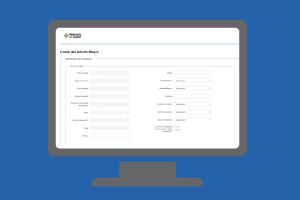

Listado de Sistemas de DIGESA
-

Portal de Medicamentos
Página web de acceso público que permite visualizar la información de todos los medicamentos incluidos en el Diccionario Nacional de Medicamentos y Afines.
-

SHARPS (Sistema de Habilitación y Registro de Profesionales de la Salud)
El SHARPS es el sistema encargado de centralizar la información de todos los profesionales de la salud registrados en el Ministerio de Salud.
-
SHARSS (Habilitación de Prestadores y Servicios de Salud)
Sistema pensado para que los ciudadanos puedan, accediendo a un “trámite en línea”, realizar cualquier tipo de denuncia, sugerencia, o agradecimiento a las diferentes instituciones de salud, sean o no prestadores integrales.
-
Sistema BLH (Banco de leche humana)
Aplicación que permite registrar y gestionar información sobre las donantes de leche humana.
-
Sistema centralizado de inspección y fiscalización
Obtener un sistema que centralice la información de todos los sectores vinculados o relacionados con tareas inspectivas o de fiscalización.
-
Sistema Control Tabaco
Es un sistema que permite el ingreso de las inspecciones que realizan los inspectores del Programa Nacional para el Control de Tabaco en todo el país.
-
Sistema de Certificado de Defunción
El alcance del Sistema abarca el ingreso de todos los Certificados de Defunción realizados en el territorio nacional por parte de las instituciones de salud correspondiente, esto incluye los extranjeros que mueren en Uruguay.
-
Sistema de Certificado de Nacido Vivo
Sistema usado por las maternidades de los prestadores de saludo donde registran y emiten el certificado de nacido vivo. Certificado que es usado para la inscripción en DGREC
-
Sistema de Denuncias y Reclamos
Sistema pensado para que los ciudadanos puedan, accediendo a un “trámite en línea”, realizar cualquier tipo de denuncia, sugerencia, o agradecimiento a las diferentes instituciones de salud, sean o no prestadores integrales
-
Sistema de Expediente Electrónico
El Ministerio de Salud realiza el seguimiento de todos sus trámites mediante un Sistema de Expediente Electrónico.
-
Sistema de Laboratorio
Sistema que apoya a los procesos del Laboratorio Central del MSP.
-
Sistema de Vigilancia de Inspecciones Hospitalarias
El Ministerio realiza la vigilancia de infecciones hospitalarias de todo el país a través de un sistema de gestión web permite a usuarios de todos los hospitales debidamente acreditados, a registrar, controlar y evaluar todos los eventos bajo vigilancia.
-
Sistema Integral de Vacunas
El Sistema donado por Valencia España permite la gestión integral de Vacunas desde el registro de la orden de compra, la gestión de stock, el registro del acto vacunal así como también la generación de indicadores de cobertura.
-
Tuberculosis
Sistema que permite realizar el seguimiento de casos de tuberculosis mediante el registro del caso y el seguimiento del paciente durante todo el tratamiento.